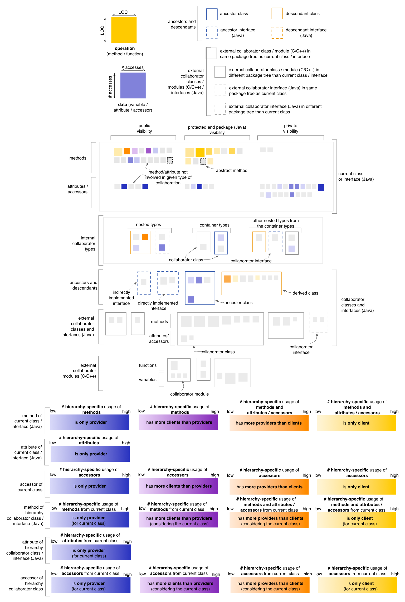
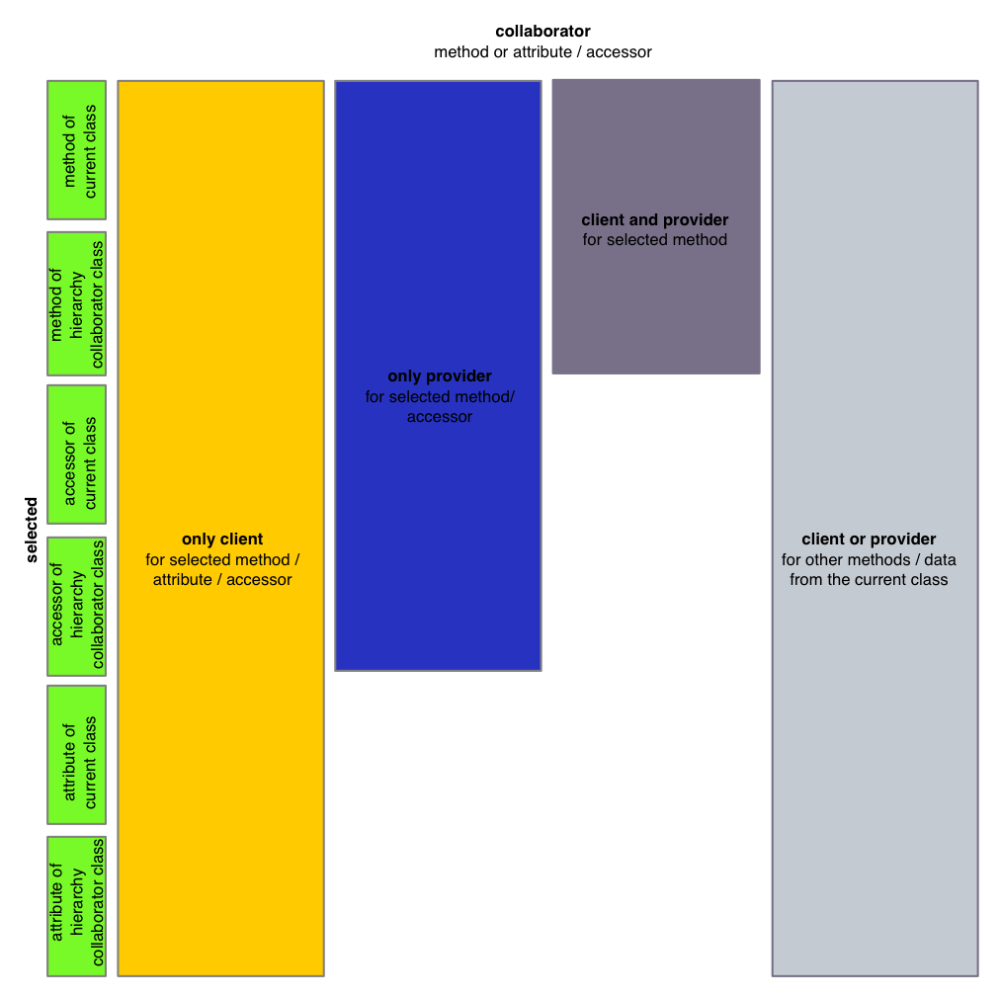

Class Map - Inheritance Perspective
The Inheritance Perspective of the Class Map
provides insight into the inheritance-specific use of both data and
methods between
the current class or interface and its hierarchy. In this context
“inheritance specific use”
means data accesses or method calls that occur exclusively through the
implicit or explicit use of self reference / pointer (this / super
keywords). In other words, if a class “B” extends another class “A”,
and class “B” has a method “b()” which contains code that refers to
protected members inherited from class “A”, then those references are
considered to be inheritance specific if and only if they occur through
the implicit or explicit use of the self reference / pointer. They are
not considered inheritance specific accesses, if they occur for example
through a local variable of type “A” defined in method “b()”. In this
perspective the coloring of the operations and data belonging to
external collaborator classes and modules is disabled.
In the
default state,
the Inheritance Perspective will render attribute nodes using a blue
color
gradient, computed based on the number of operations accessing it
through a self reference / pointer. Operation nodes will be rendered
based on
their predominant nature from the viewpoint of inheritance-specific use
of data and methods, using
four color gradients:
- if a method calls other methods or accesses data from its class
hierarchy through a self reference / pointer, but is not itself called
(i.e. it is a
pure client) from within the class hierarchy usinga self reference / pointer, it is rendered in a shade
of yellow
- if
a method calls other methods or accesses data from its class hierarchy through a self reference / pointer, and is also called from within the class hierarchy using a self reference / pointer, it will be
rendered in
a color that depends on which aspect is predominant (i.e. mostly client
shown in a shade of orange, or mostly provider shown in a shade
of magenta)
- if a method is called by
other methods from within the class hierarchy through a self reference / pointer, but does not itself call other methods nor it accesses any data of the class hierarchy (i.e. it is a
pure provider) through a self reference / pointer, it is shown in a shade of blue

Entity selection
The user may select an operation or a data in the map, in
which case the coloring of the map changes to reflect the inheritance-specific use of both data and methods from
the point of view of the selcted entity. The selected entity is colored
in green (with no borders). All other nodes are colored using
the four colors described below, based on their relation to
the selected entity. In case of the Inheritance
Perspective, this relation is defined in terms of inheritance-specific method
calls and data accesses. Note that the last color shown below
is actually reserved for nodes with no relation to the selected entity
but with relations
to other nodes from the current class or interface. This shade of
gray is slightly darker than the one used for nodes
with no relation to the data / operations of the current class or
interface.

Other quality perspectives
Cohesion, Complexity,
Coupling, Design Flaws,
Encapsulation
Metrics used
DIT (indirectly), LOC